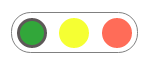
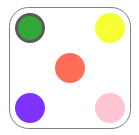
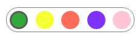
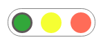
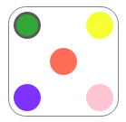
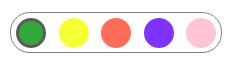

Color pickers
These are some conceptual design tests to create a color picker.
 The basic three colors picker  The five colors picker (dice version)  The five colors picker (inline) The five colors picker (inline breaked)
The five colors picker (inline breaked)
These are some conceptual design tests to create a color picker.
 The basic three colors picker  The five colors picker (dice version)  The five colors picker (inline)
The five colors picker (inline breaked)